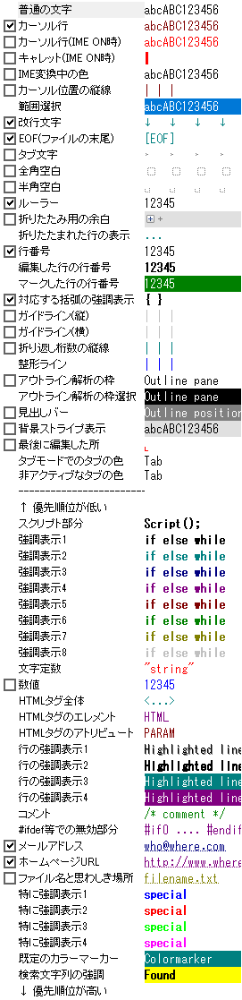

- （HME0016C〜HME0016E共通）秀丸エディタの画面上で、特定の記号や文字が表示されなかったり、改行、[EOF]のマークが表示されなかったりします。他のアプリケーションでは正常に表示されています。秀丸エディタのカラー設定が上手くいっていないかもしれません。

まず以下の点を確認してください。
- 自分の表示したい項目について、「その他」→「ファイルタイプ別の設定」−「デザイン」の各項目の設定を確認してください。
場所の一覧
各項目の文字色、背景色、スタイルを設定します。先頭にチェックボックスのある項目は、表示のON/OFFを切り替えます。
(全部の設定を見るには、スクロールバーを操作してください。)
表示1
「デザイン」の「場所の一覧」から、エディタ画面上に関係する内容のON/OFFだけ、切り出した画面です。
表示2
「デザイン」の「場所の一覧」から、ルーラー、行番号、カーソル行のON/OFFと設定を切り出した画面です。
複数行コメント
自動判定で行うか、明示的に言語を指定しください。強調表示
強調表示方法(自動判定、ユーザー定義、なし)や、ユーザー定義の場合は、設定文字、検索方法、表示方法。
- 「場所の一覧」で設定した各項目の文字色、背景色に問題はありませんか？「場所の一覧」で表示されている順番自体が、優先順位になっていて、一番上が優先度が低く、一番下が高くなります。優先度によっては、色が上書きされるので、文字色と背景色が色が重なると文字が見えなくなります。
もしこれらの設定に間違いがなければ、ディスプレイドライバの問題が考えられますので、 [HME0016B]●秀丸の画面だけが乱れる（その２） を試してみてください。
- 自分の表示したい項目について、「その他」→「ファイルタイプ別の設定」−「デザイン」の各項目の設定を確認してください。